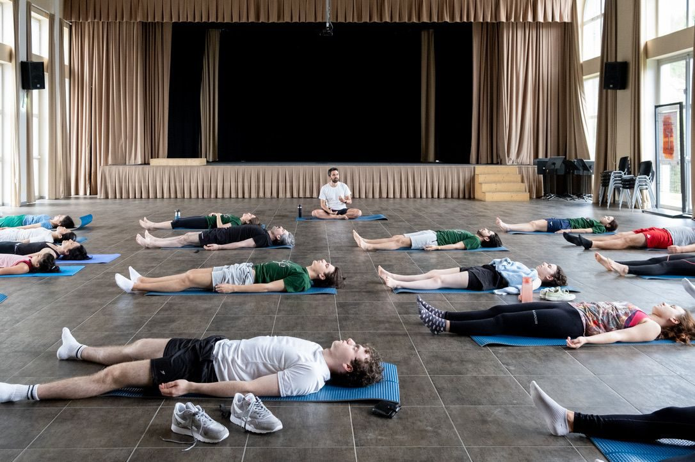

sapiens.yoga
biological techniques for humans
sapiens yoga is an approach that is based on ancient Indian techniques.
it's simple, strong and pleasant to practice. it's a yoga for adult humans that want to become flexible, focused and in peace, not acrobats.
it teaches the tradition while embracing modern human knowledge.
the practice focuses on free body exercises and breathing techniques (nothing new under the sun). maybe you will notice that the uniqueness of the method is how it is done: mindfulness techniques are used during the body positions.
then, it aims to enhance your thoughts and emotions through enjoyable mindfulness and relaxation activities.
the goal is to develop organic happiness and a sense of connection where you feel in peace with yourself and your Self.

for now, you can experience sapiens yoga through private classes in milan, and in online groups.
pratica online orari, pacchetti e la lista per sapere quando si ripartesapiens yoga is a project by alexandre, a human who loves yoga and wants to share it with the world.
sapiens yoga people are eligible to be part of the Sapiens.bio project.
want to reach alex? write to alex@sapiens.bio